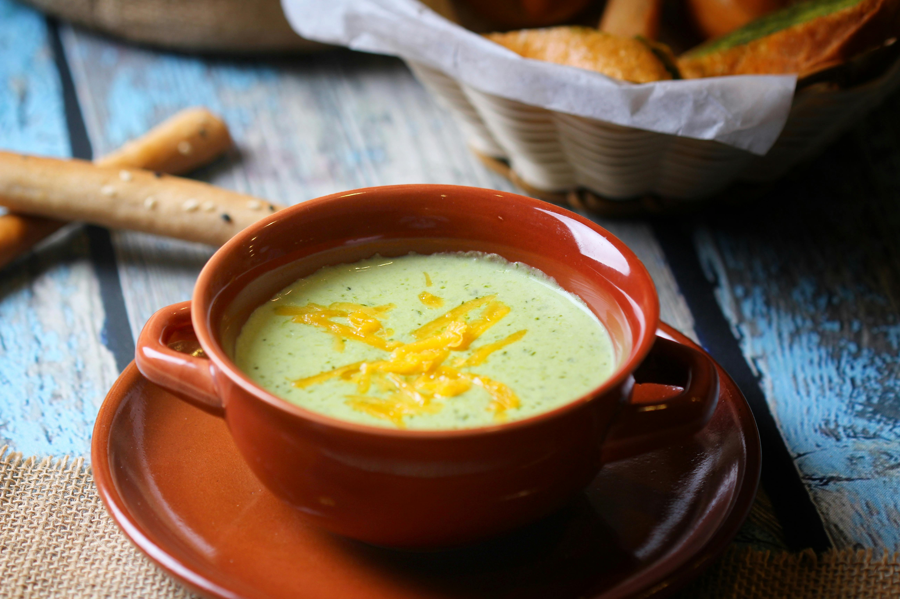

Caldo Verde

Description
The soul food of Portugal.
Simple, humble, deeply comforting. Kale soup with chouriço.
Ingredients
- 1kg floury potatoes, peeled and roughly chopped
- 1 large onion, roughly chopped
- 4 garlic cloves, sliced
- 3 tbsp olive oil
- 1.5 litres water or light chicken stock
- 200g chouriço, sliced into rounds
- 300g kale or Portuguese couve, very finely shredded
- salt and black pepper to taste
Steps
- Heat the olive oil in a large pot over medium heat. Add the onion and garlic and cook gently for about 8 minutes until soft and translucent.
- Add the potatoes and water or stock. Bring to a boil, then reduce heat and simmer for 20 minutes until the potatoes are completely tender.
- Using a hand blender, blitz the soup until completely smooth. Season generously with salt and pepper.
- Add the chouriço slices and simmer for 5 minutes so the fat and flavour release into the broth.
- Stir in the shredded kale and cook for 2 to 3 minutes. The kale should stay bright green and slightly firm.
- Taste and adjust seasoning. Serve immediately in deep bowls with a drizzle of good olive oil and crusty bread on the side.
Best eaten the day it is made, while the kale is still vibrant and the broth is rich and silky.
Casa